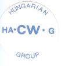

HACWG the Hungarian Telegraphy Club
The Hungarian Telegraphy Group HACWG was founded on July 28, 1985 in Szekszard with the intention to unite the Hungarian amateurs who like CW. The objectives of the group are:
- to spread and encourage CW - to promote and work Hungarian awards - to develop the CW skills of its membersForeign radioamateurs can become honorary members under the following conditions: Get two recommendations from HACWG members. Asking for a recommendation is possible after having a contact for at least 30 minutes at a CW speed of at least 150 letters/minute (PARIS base). Honorary members are allowed to give out recommendations, too. Applicants have to include a statement that they did not use any decoder or computer during the recommendation QSOs.
Our meetings on air are every Monday around 20 local time (in HA) on 3565 KHz +/- QRM. The two recommendation QSLs and 5 IRCs / on entrance only / should be send together with the application to the following address:
RADIO CLUB HA3KNA
P.O.BOX 169
H-7100 SZEKSZARD
HUNGARY
Visit also http://www.ha3nu.try.hu/
for further reading.